e-mail: post4inet@gmail.com |
| акселерометры | - обзор предлагаемых устройств |
| прецизионный акселерометр |
-
измерение малых ускорений,
-
широкий динамический диапазон
|
| акселерометр Bluetooth | ВИДЕО Акселерометр Bluetooth -график в реальном времени |
| акселерометр USB | ВИДЕО 1 Измерения
акселерометром
USB с памятью =================== ВИДЕО 2 Синхронная запись ДВУМЯ акселерометрами USB |
| акселерометр RS-485 | ВИДЕО Измерения акселерометром RS-485 |
| акселерометры с аналоговыми выходами | |
| Ударные испытания транспорта | ВИДЕО Испытания ж/д цистерны на удар |
| Ударные испытания оборудования | ВИДЕО Испытания велосипедных шлемов на удар |
| Программное обеспечение |
| Параметры акселерометров |
| Применение акселерометров |
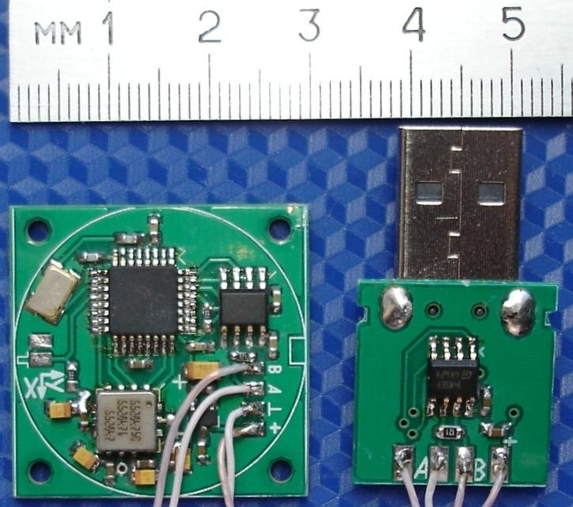
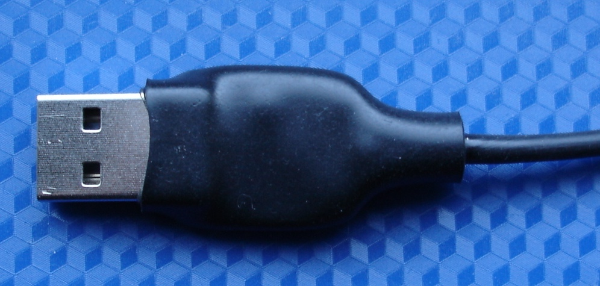

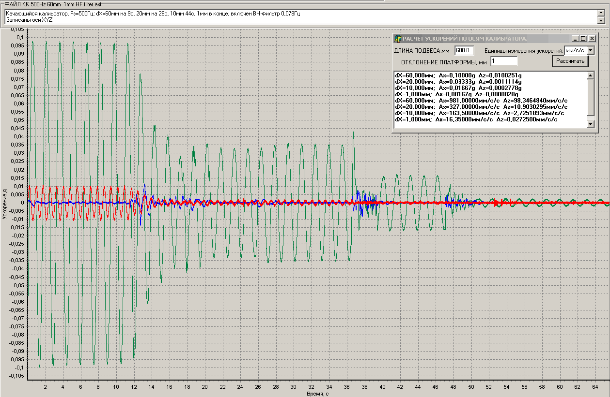
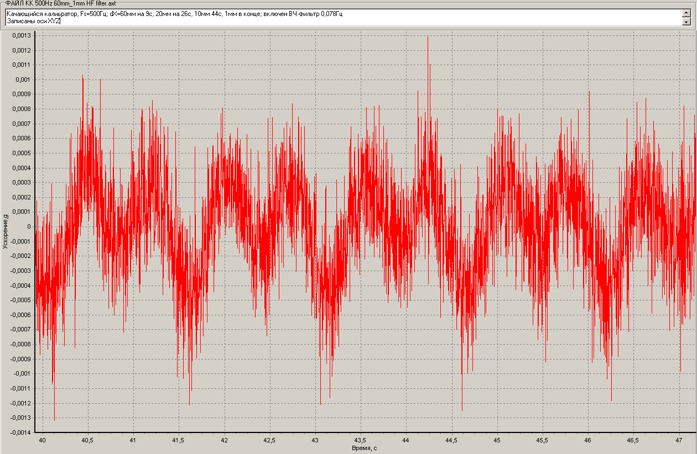
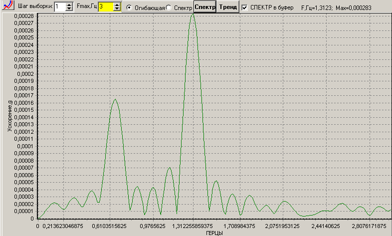
В правых верхних углах картинок со спектрами отображаются частота и значение максимальной спектральной составляющей.
Значение максимальной спектральной составляющей 0,000283g близко к расчетному Az=0,0002778g..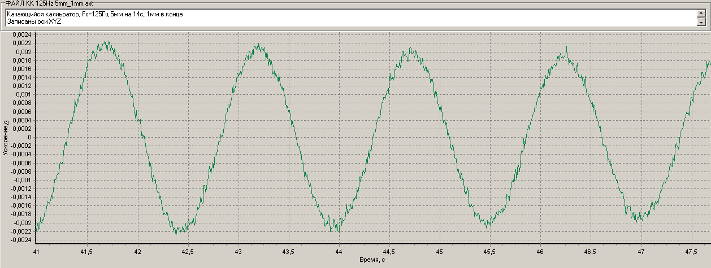
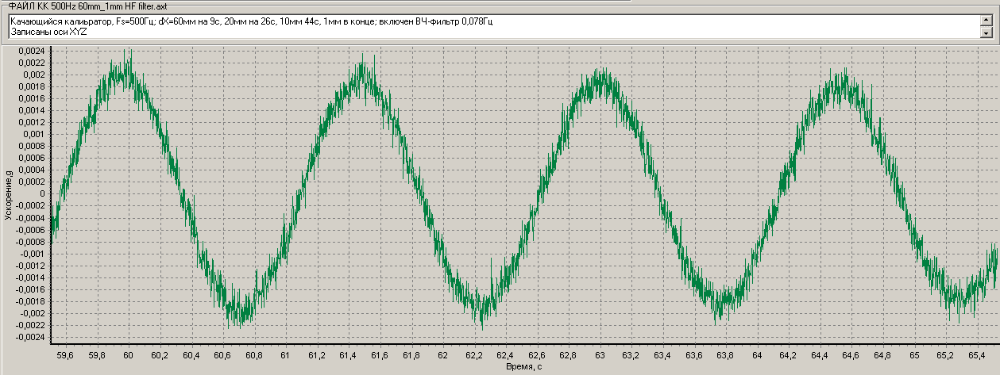
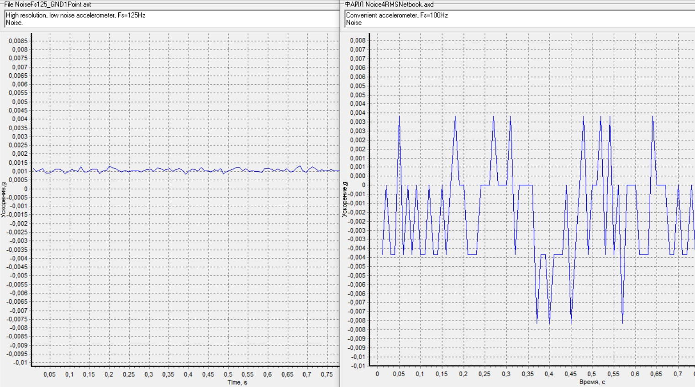
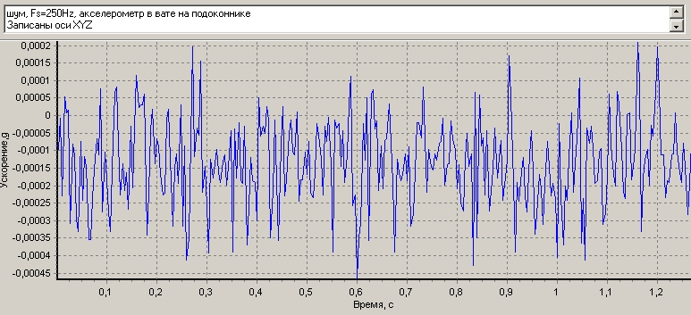
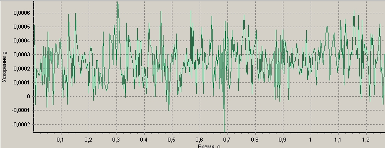
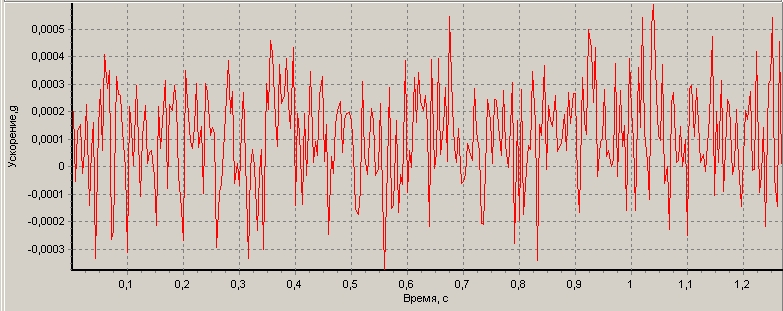
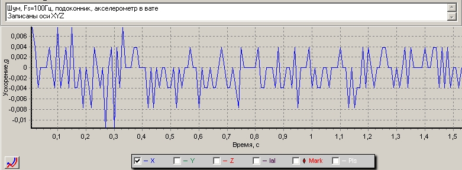 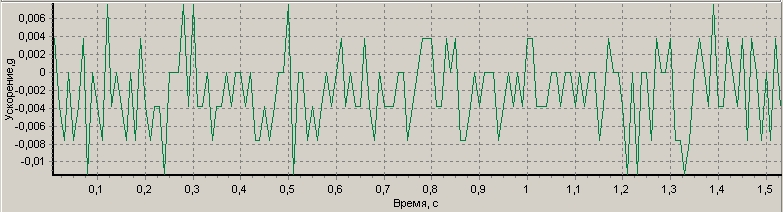 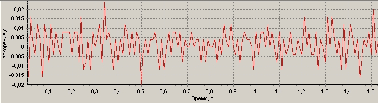
Ось
X: размах от -0,010000g до 0.008000g
Ось Y: размах от
-0,012000g до
0.008000g
Ось Z:
размах от -0,020000g до 0.020000g